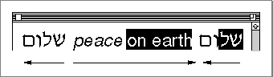
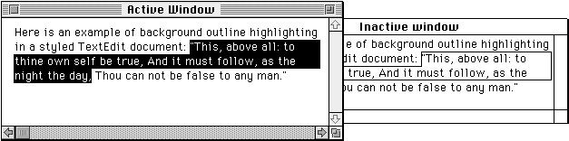
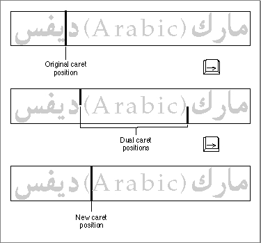

The TextEdit User Interface
This section describes the TextEdit user interface, that is, how TextEdit displays text on the screen and the methods it uses to communicate information about that text to an application user. It explains some of the processes that TextEdit performs automatically for your application, including how TextEdit uses highlighting or a caret to identify where the next editing operation is to occur, how TextEdit handles line measurement for your application, and how TextEdit uses buffering to handle 2-byte characters.
This section also covers some aspects of the user interface that your application can control through TextEdit routines, such as the kind of text alignment and the use of buffering to enhance performance.The Selection Range, the Insertion Point, and Highlighting in TextEdit
Depending on the purpose of an application, a user might select a range of text to be edited or the application might set the selection range. In either case, the selected text becomes the current selection range. TextEdit uses a byte offset to identify the position of a character in the text buffer of an edit record, and an edit record includes fields that specify the byte offsets of the characters in the text buffer that correspond to the beginning and the end of the current selection range in the displayed text. (See "An Overview of the Edit Record" on page 2-14 for more about edit records.)When the byte offset values for the beginning and the end of the selection range are the same, the selection range is an insertion point. TextEdit marks an insertion point with a blinking caret in the form of a vertical bar (|).
TextEdit uses highlighting to display a selection range. Because TextEdit supports mixed-directional text, the selection range can appear as discontinuous text. Displayed text is highlighted according to the storage order of the characters. When multiple script systems having different line directions are installed, a continuous sequence of characters in memory may appear as a discontinuous selection when displayed.
Figure 2-3 shows how TextEdit highlights a range of text whose displayed glyphs are not contiguous, although their corresponding byte offsets are contiguous in memory. In this example, the primary line direction is left to right.Figure 2-3 Discontinuous highlighting display

TextEdit provides a function that lets you to turn outline highlighting, the framing of text in a selection range, in an inactive window, on or off. See Figure 2-4. (For more information about outline highlighting, see "TEFeatureFlag" on page 2-102.)Figure 2-4 Outline highlighted text selection in background window

Caret Position and Movement
This section describes how TextEdit displays and moves a caret. For more information, see the discussion of caret handling in the chapter "Introduction to Text on the Macintosh" in this book.TextEdit marks the position in the displayed text where the next editing operation is to occur with a caret. When TextEdit pastes text into a record, it positions a caret after the newly pasted text on the screen. TextEdit uses a single caret for text that does not include mixed directions. When TextEdit displays a single caret in unidirectional text and the user presses an arrow key to move the caret left or right across the text, TextEdit moves the caret in the direction of the arrow key.
When the text includes mixed directions, TextEdit uses either a moving caret or a dual caret, depending on the value of a Script Manager flag. For example, if this flag specifies a moving caret, TextEdit displays the caret at the screen location where the next glyph is to appear, based on the text direction of the keyboard script.
If this flag specifies a dual caret, TextEdit displays a high caret and a low caret, each measuring half the line's height. The high caret is displayed at the screen location associated with the glyph that has the same direction as the primary line direction, and the low caret is displayed at the screen location associated with the glyph that has a different direction from the primary line direction.
When TextEdit displays a dual caret on a direction boundary, only the primary caret moves in the direction of the arrow. Figure 2-5 shows a sequence of two Right Arrow keypresses and their impact on caret display and movement in a line containing mixed-directional text. In this example, the primary line direction is right to left.
Figure 2-5 Caret movement across a direction boundary

In the first instance of the text segment, the caret is positioned within the Arabic text. When the user presses the Right Arrow key once, the insertion point is positioned on a direction boundary and the caret splits into a dual caret. When the user presses the Right Arrow key again, TextEdit displays a single, full caret after the parenthesis in the Roman text. Because the caret position is again in the middle of a style run, TextEdit no longer uses the dual caret.Vertical movement of the caret is less complex. When the user presses the Up Arrow key, the caret moves up by one line, even in lines of text containing fonts of different sizes. When the caret is positioned on the first line of an edit record, and the user presses the Up Arrow key, TextEdit moves the caret to the beginning of the text on that line, at primary caret position 0. (This position corresponds to the visible right end of a line when the primary line direction is right to left and to the left end of the line when the primary line direction is left to right.)
- Note
- TextEdit currently deviates from this model for caret movement in monostyled left-to-right text (displayed in a non-Roman font) on any primary right-to-left script system. On the Arabic script system, for example, it is possible to display the low-ASCII Roman characters from an Arabic font. If a user presses the arrow keys to move through these characters, the caret moves in the opposite direction of the arrow.
Similarly, when the user presses the Down Arrow key, the caret moves down one line. When the caret is positioned on the last line of an edit record, and the user presses the Down Arrow key, TextEdit moves the caret to the end of the text on that line (that is, the visible left end of a line when the primary line direction is right to left and to the right end of a line when the primary line direction is left to right).
If spaces at the end of a text line extend beyond the view rectangle, TextEdit draws the caret at the edge of the view rectangle, not beyond it. Whether TextEdit displays a caret at the beginning or end of a line when a mouse-down event occurs at a line's end depends on the current caret position and the value in a field (
- Note
- TextEdit does not support the use of modifier keys, such as the Shift key or the Option key, in conjunction with the arrow keys.
clikStuff) of the edit record. TextEdit sets this field to reflect whether the most recent mouse-down event occurred on the leading or trailing edge of a glyph.For example, if the mouse-down event occurs on the leading edge of a glyph, TextEdit displays the caret at the caret position corresponding to the leading edge of that glyph. If the mouse-down event is on the trailing edge of a glyph, TextEdit displays the caret at the beginning of the next line. For more information about determining a caret position, see the sections that discuss caret handling in the chapters "Introduction to Text on the Macintosh" and "QuickDraw Text" in this book.
Text Alignment
TextEdit allows you to specify the alignment of the lines of text, that is, their horizontal placement with respect to the left and right edges of the text area or destination rectangle. The different types of alignment that TextEdit supports accommodate script systems that are read from right to left, as well as those that are read from left to right. The types of alignment supported areIf your application requires justified alignment, you can use the QuickDraw routines that support full justification; TextEdit does not support justified alignment. See the chapter "QuickDraw Text" in this book for more information.
- default alignment (positions the text according to the line direction of the system script. It can be either left or right. Line direction is the direction in which text in a particular language is written and read. The English language has a rightward, or left-to-right, line direction. Arabic and Hebrew have a [primarily] leftward, or right-to-left, line direction.)
- center alignment (centers each line of text between the left and right edges of the destination rectangle)
- right alignment (positions the text along the right edge of the destination rectangle)
- left alignment (lines up the text with the left edge of the destination rectangle)
Line Measurement
TextEdit measures a line of text appropriately for all script systems by removing any trailing white space from the end of it, taking the line direction into account. It uses the QuickDrawVisibleLengthfunction to exclude trailing white space, based on the script system, the text direction, and the primary line direction. For more information about the behavior ofVisibleLengthfor various script systems, see the chapter "QuickDraw Text" in this book.An anomaly exists, however, in the way TextEdit draws at the end of a line. When the primary line direction of a script system is right to left (for instance, on a Hebrew system), when the alignment is left or center, and when spaces are entered in a right-to-left font, TextEdit measures spaces at the end of the line and therefore may draw the text beyond the edge of the view rectangle. The caret, however, remains in view and is pinned to the left edge of the view rectangle.
This anomaly also exists when the primary line direction of a script system is left to right and the alignment is center. In this instance, TextEdit measures spaces at the end of the line, and as more spaces are added (and, therefore, measured), the visible text in the line is drawn out of view beyond the left edge of the view rectangle. The caret, however, remains in view and is pinned to the right edge of the view rectangle.
Text Buffering
TextEdit uses two methods of text buffering; one method, which is automatic, is used to handle 2-byte characters properly. The other method, which you can enable or disable, improves performance in relation to how TextEdit handles input of 2-byte characters.For the first method, which is automatic, TextEdit relies on the Script Manager. The Script Manager handles 2-byte characters properly, and TextEdit takes advantage of this. If a 2-byte character, such as a Kanji character, is typed, TextEdit buffers the first byte until it processes the second byte, at which time it displays the character. The internal buffer that TextEdit uses for a 2-byte character is unique to each edit record. For example, TextEdit can buffer the first byte of a 2-byte character in a record, then the application can call the TextEdit
TEKeyprocedure for another edit record. WhileTEKeyprocesses the character for the second edit record, the first byte of the 2-byte character remains in the first edit record's buffer until TextEdit processes the second byte of that 2-byte character, and then displays the character.The second method of text buffering enhances performance, and you can turn it on or off through the TextEdit function,
TEFeatureFlag. In this case, TextEdit uses a global buffer--it differs from theTEKey procedure's internal 2-byte buffer--that is used across all active edit records. These records may be in a single application or in multiple applications. Because of this, you should exercise care when you enable the text-buffering capability in more than one active record; otherwise, the bytes that are buffered from one edit record may appear in another edit record.If you enable text buffering for performance enhancement on a non-Roman script system and the keyboard has changed, TextEdit flushes the text of the current script from the buffer before buffering characters in the new script.
- Ensure that buffering is not turned off in the middle of processing a 2-byte character. To guarantee the integrity of your record, it is important that you wait for an idle event before you disable buffering or enable buffering in a second edit record.
- When text buffering is enabled, ensure that
TEIdleis called before any pause of more than a few ticks--for example, beforeWaitNextEvent. A possibility of a long delay before characters appear on the screen exists--especially in non-Roman systems. If you do not callTEIdle, the characters may end up in the edit record of another application.